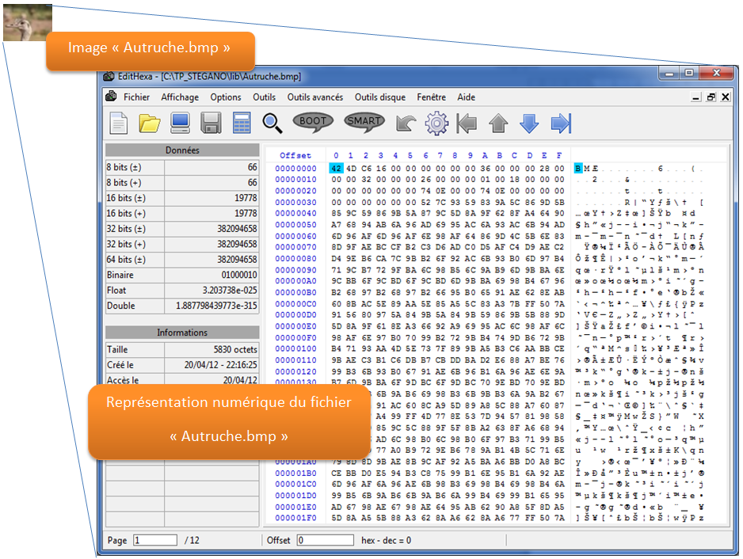
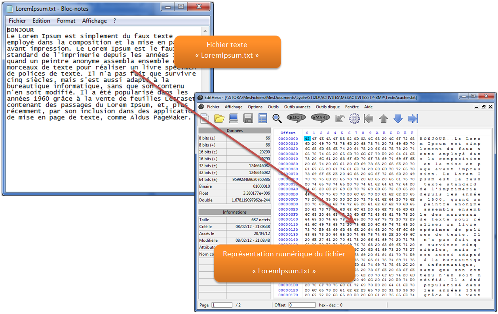

Le programme EDITHEXA permet de visualiser le contenu d'un fichier.
En réalité les informations dans la mémoire de l’ordinateur (RAM, Disque dur,…) sont stockées en binaire sous forme d’une succession de 0 et de 1 (bits).
Les 128 premiers bits du fichier "Autruche.bmp" sont les suivants:
01000010 01001101 11000110 00010110 00000000 00000000 00000000 00000000 00000000 00000000 00110110 00000000 00000000 00000000 00101000 00000000………….
Pas facile à interpréter !!!
Le programme EDITHEXA permet de visualiser ces informations en Hexadécimal ou en ASCII.
Le contenu du fichier est visualisé octet par octet (paquets de 8 bits). A chaque octet correspond un caractère ASCII.
Lorsque le contenu du fichier n'est pas du texte, les caractères ASCII n'apporte pas grand chose à la lecture du fichier. Dans le cas d'un fichier contenant du texte la représentation en ASCII facilite sa lecture (voir exemple plus bas).

